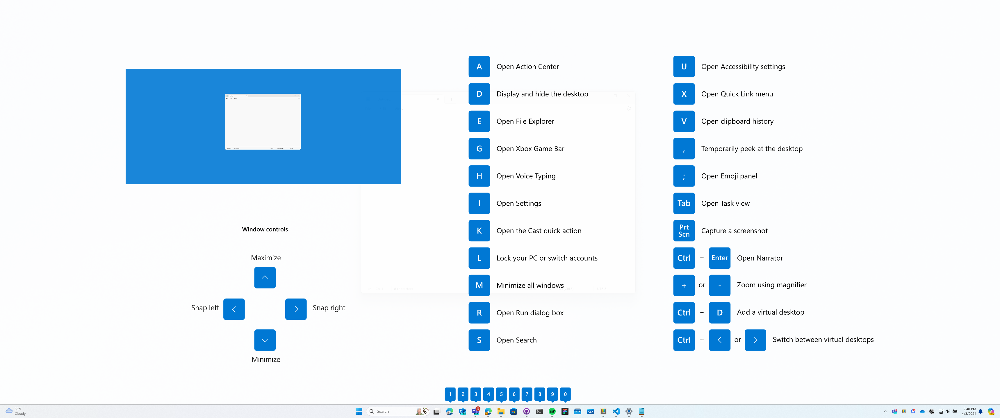
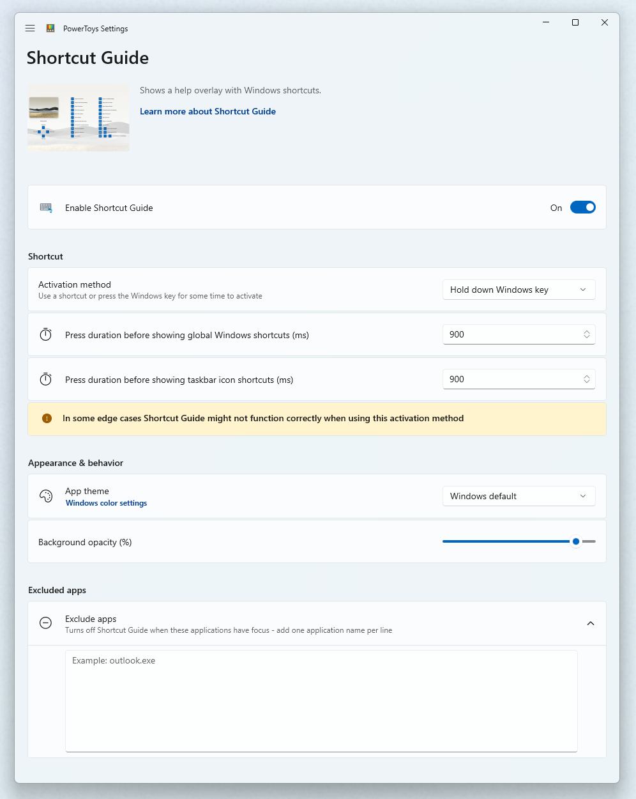

Windows key shortcut guide
The PowerToys Shortcut Guide displays common keyboard shortcuts that use the Windows key. This utility helps Windows power users quickly access keyboard shortcuts for window management, taskbar navigation, and system commands by holding the Windows key.
Get started
To open the shortcut guide, hold down the ⊞ Windows key for the time as set in the PowerToys Settings (900ms by default). An overlay will appear showing keyboard shortcuts that use the Windows key, including:
- common Windows shortcuts
- shortcuts for changing the position of the active window
- taskbar shortcuts

Keyboard shortcuts using the Windows key ⊞ Win can be used while the guide is displayed. The result of those shortcuts (active window moved, arrow shortcut behavior changes etc.) will be displayed in the guide.
Pressing the shortcut key combination again will dismiss the overlay.
Tapping the Windows key will display the Windows Start menu.
Important
The PowerToys app must be running and Shortcut Guide must be enabled in the PowerToys settings for this feature to be used.
Settings
These configurations can be edited from the PowerToys Settings:
| Setting | Description |
|---|---|
| Activation method | Choose your own shortcut or use the ⊞ Win key |
| Press duration | The duration (in milliseconds) to hold down the ⊞ Win key in order to open the shortcut guide |
| Activation shortcut | The custom shortcut used to open the shortcut guide |
| App theme | Light, Dark or Windows default |
| Background opacity | Opacity of the Shortcut Guide overlay |
| Excluded apps | Ignores Shortcut Guide when these apps are in focus. Add an application's name, or part of the name, one per line (e.g. adding Notepad will match both Notepad.exe and Notepad++.exe; to match only Notepad.exe add the .exe extension). |

Install PowerToys
This utility is part of the Microsoft PowerToys utilities for power users. It provides a set of useful utilities to tune and streamline your Windows experience for greater productivity. To install PowerToys, see Installing PowerToys.